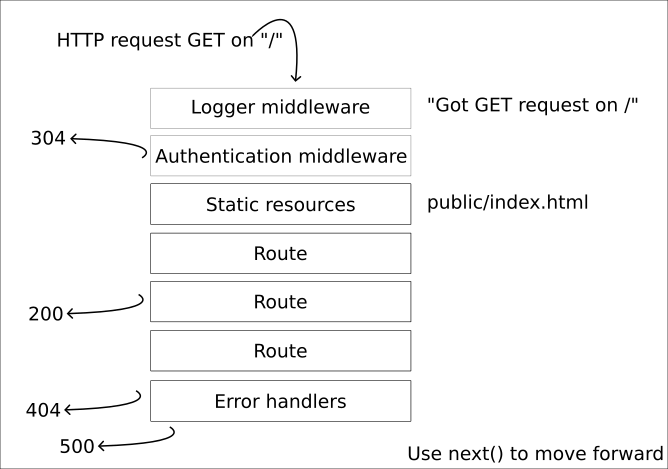

<!doctype html>
<html class="theme-5">
<meta charset="utf-8" />
<link href="../html-slideshow.bundle.min.css" rel="stylesheet" />
<link href="../style.css" rel="stylesheet" />
<script src="https://dbwebb.se/cdn/js/html-slideshow_v1.1.0.bundle.min.js"></script>

<title>Express</title>

<script data-role="slide" type="text/html" data-markdown class="titlepage center">
# Express Web Framework
## Create web applications
### Mikael Roos
</script>


<script data-role="slide" type="text/html" data-markdown>
# Agenda

* What is Express
* Get going
* Express server
* Routes
* Logger
* Static files
* Middleware
* Error handling
* Template language

</script>


<script data-role="slide" type="text/html" data-markdown class="titlepage center">
# Express
## About
</script>


<script data-role="slide" type="text/html" data-markdown>
# Express 

* Express.js, or simply Express 
* Backend web application framework
* Building RESTful APIs with Node.js
* Free and open-source software under the MIT License
* Designed for building
    * web applications
    * APIs
* De facto standard server framework for Node.js(?)

<p class="footnote">https://en.wikipedia.org/wiki/Express.js</p>


</script>


<script data-role="slide" type="text/html" data-markdown>
# About 

* Inspired by Sinatra/Ruby
* Relatively minimal with many features available as plugins
* Backend component of MEAN, MERN or MEVN stack
    * MongoDB database
    * JavaScript front-end framework
    * Node

</script>


<script data-role="slide" type="text/html" data-markdown>
# History 

* Founded by TJ Holowaychuk
* First release May 2010
* Rights to manage the project were acquired by StrongLoop (2014)
* StrongLoop acquired by IBM in 2015
* IBM placed Express.js under the stewardship of the Node.js Foundation incubator (2016)

</script>


<script data-role="slide" type="text/html" data-markdown>
# History...

* Now managed by the OpenJS Foundation
* As a "At-Large Projects"

> At-Large projects are those which the CPC believes are, or have the potential to be, important to Impact projects in particular or the ecosystem in general. 
> They may be early-stage projects just getting started, or they may be long-established projects with minimal resource needs.

<p class="footnote">https://openjsf.org/projects/</p>

</script>


<script data-role="slide" type="text/html" data-markdown class="titlepage center">
# Express
## Get Going
</script>


<script data-role="slide" type="text/html" data-markdown>
# Pitch 

* Express
* Fast, unopinionated, minimalist web framework for Node.js

</script>


<script data-role="slide" type="text/html" data-markdown>
# Install 

* How to install

```
mkdir hello
cd hello

npm init -y
npm install express --save

touch index.mjs
```

</script>


<script data-role="slide" type="text/html" data-markdown>
# Express server

* Create the server

```
// Import Express
import express from 'express'
const app = express()

// Start the server
const port = 3000
app.listen(port, () => {
    console.log(`Listening at http://localhost:${port}`)
})
```


</script>


<script data-role="slide" type="text/html" data-markdown>
# Start and access

* Start and access the server

```
$ node index.mjs
Listening at http://localhost:3000 
```

```
$ curl localhost:3000
<!DOCTYPE html>
<html lang="en">
<head>
<meta charset="utf-8">
<title>Error</title>
</head>
<body>
<pre>Cannot GET /</pre>
</body>
</html>
```

</script>


<script data-role="slide" type="text/html" data-markdown>
# Add a hello route

```
// Add a route saying hello
app.get('/', (req, res) => {
  res.send('Hello World!')
})
```

```
$ curl localhost:3000
Hello World!
```

</script>


<script data-role="slide" type="text/html" data-markdown>
# Add a JSON route

```
// Add a route saying hello with JSON
app.get('/json', (req, res) => {
  const obj = { message: 'Hello JSON World' }

  res.json(obj)
})
```

```
$ curl localhost:3000/json
{
  "message": "Hello JSON World"
}
```

</script>


<script data-role="slide" type="text/html" data-markdown>
# Routing

> Routing refers to determining how an application responds to a client request to a particular endpoint, which is a URI (or path) and a specific HTTP request method (GET, POST, and so on).

* Each route can have one or more handler functions

```
app.METHOD(PATH, HANDLER)
```

</script>


<script data-role="slide" type="text/html" data-markdown>
# Routing...

* Supports all HTTP request methods

```
app.post('/', (req, res) => {
  res.send('Got a POST request')
})

app.put('/user', (req, res) => {
  res.send('Got a PUT request at /user')
})

app.delete('/user', (req, res) => {
  res.send('Got a DELETE request at /user')
})
```

</script>


<script data-role="slide" type="text/html" data-markdown>
# Static files

* Serve static files from `public/`
* Acts as a ordinary webserver

```
app.use(express.static('public'));
```

```
$ curl localhost:3000/page.html
<!doctype html>
<html>
<head>
    <title>Website example</title>
    <link rel="stylesheet" type="text/css" href="css/style.css">
...
```

</script>


<script data-role="slide" type="text/html" data-markdown>
# Add a logger

* Middlerware function to print out each request

```
// Add a logger printing out each request
app.use((req, res, next) => {
  console.log(`Got ${req.method} request on ${req.url}`)
  next()
})
```

```
Listening at port 3000
Got GET request on /
Got GET request on /page.html 
```

<p class="footnote">https://expressjs.com/en/guide/writing-middleware.html</p>

</script>


<script data-role="slide" type="text/html" data-markdown>
# Logger morgan

* The npm package "morgan" contains a popular logger 

```
npm install morgan --save
```

```
// Get a logger
import logger from 'morgan'

// Add the logger
app.use(logger('dev'));
```

```
Listening at port 3000
GET / 200 3.317 ms - 12
```

<p class="footnote">https://www.npmjs.com/package/morgan</p>

</script>


<script data-role="slide" type="text/html" data-markdown>
# Error handling

* Express catches and processes errors that occur
* Default error handler
* You can create your own
* Add it last in the list

```
app.use((err, req, res, next) => {
  console.error(err.stack)
  res.status(500).send('Something broke!')
})
```

<p class="footnote">https://expressjs.com/en/guide/error-handling.html</p>

</script>


<script data-role="slide" type="text/html" data-markdown>
# Error handling...

* Simulate or generate an error

```
app.get('/error', (req, res) => {
  throw new Error('Simulate a 500')
})
```

</script>


<script data-role="slide" type="text/html" data-markdown>
# 404 handler

* Add it last in the list of the routes
* Since no route was matched, it should be a 404
* Default implementation exists
* Do your own 404 and print out more details for troubleshooting

```
app.use((req, res, next) => {
  res.status(404).send("Sorry can't find that!")
})
```

</script>


<script data-role="slide" type="text/html" data-markdown>
# Middleware

* Check the request and take actions
* Execute any code
* Make changes to the request and the response objects
* End the request-response cycle
* Call the next middleware function in the stack
* For example
    * Logging
    * Authentication

</script>


<script data-role="slide" type="text/html" data-markdown>
# Builtin middleware

* express.static
    * serves static assets such as HTML files, images
* express.json
    * parses incoming requests with JSON payloads
* express.urlencoded
    * parses incoming requests with URL-encoded payloads

</script>


<script data-role="slide" type="text/html" data-markdown>
# Third party middleware

* body-parser
    * parse HTTP request body
* cookie-parser
    * parse cookie header and populate req.cookies
* cookie-session
    * establish cookie-based sessions

<p class="footnote">http://expressjs.com/en/resources/middleware.html</p>

</script>


<script data-role="slide" data-markdown type="text/html" class="center">
# Layers of handlers
<figure>
    
    <figcaption>Request passes through middlewares.</figcaption>
</figure>
</script>


<script data-role="slide" type="text/html" data-markdown class="titlepage center">
# Nice to know
</script>


<script data-role="slide" type="text/html" data-markdown>
# Redirect

* Redirect to another page
* POST update state, then redirect to resultpage

```
// Redirect
app.post('/redirect', (req, res) => {
  res.redirect('/')
})

app.get('/', (req, res) => {
  res.send('Hi there')
})
```

</script>


<script data-role="slide" type="text/html" data-markdown>
# Route parameters

* Routes can define parameters as part of the url

```
// Route params
app.get('/users/:userId/books/:bookId', (req, res) => {
  res.send(req.params)
})
```

```
$ curl localhost:3000/users/1/books/42
{"userId":"1","bookId":"42"}
```

```
Listening at port 3000
Got GET request on /users/1/books/42
```

</script>


<script data-role="slide" type="text/html" data-markdown>
# Response methods

* res.end() End the response process
* res.json() Send a JSON response
* res.redirect() Redirect a request
* res.render() Render a view template
* res.send() Send a response of various types
* res.sendFile() Send a file as an octet stream

</script>


<script data-role="slide" type="text/html" data-markdown class="titlepage center">
# Template engine
</script>


<script data-role="slide" type="text/html" data-markdown>
# Template language

* Express can render a response onto a HTML template using a template language
* Also called views

```
npm install ejs --save
```

```
// Set up the view engine
app.set('view engine', 'ejs')
```

<p class="footnote">https://ejs.co/</p>

</script>


<script data-role="slide" type="text/html" data-markdown>
# The data

* A route prepares data in an object and sends it to a view
* The data is rendered onto the view

```
// Render a view
app.get('/render', (req, res) => {
  const data = {
    message: 'Hello World'
  }
  res.render('hello', data)
})
```

</script>


<script data-role="slide" type="text/html" data-markdown>
# The view

* Views are in the `views/` directory per default
* `views/hello.ejs`
* Data sent to view is available as variables
* The property name is now the variable name

```
<h1><%= message %></h1>
<p>Above should be some kind of hello message.</p>
```

```
$ curl localhost:3000/render
<h1>Hello World</h1>

<p>Above should be some kind of hello message.</p>
```

</script>


<script data-role="slide" type="text/html" data-markdown class="titlepage center">
# Utilities
</script>


<script data-role="slide" type="text/html" data-markdown>
# Nodemon

* Automatically restarting the node application when file changes 

```
npm install nodemon --save-dev
npx nodemon index.mjs
```

<p class="footnote">https://www.npmjs.com/package/nodemon</p>

</script>


<script data-role="slide" type="text/html" data-markdown>
# Generator

* Express generator, generates a Express setup from a template

```
npx express-generator -h
```

```
mkdir test
cd test

npx express-generator --ejs
npm install
npm start
```

```
curl http://localhost:3000
```

</script>


<script data-role="slide" type="text/html" data-markdown>
# Summary

* What is Express
* Get going
* Express server
* Routes
* Static files
* Middleware
* Error handling
* Template language

</script>


<script data-role="slide" type="text/html" data-markdown class="titlepage center">
# The end
</script>


<script data-role="slide" type="text/html" data-markdown>
</script>

</html>
